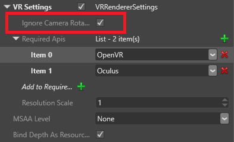

VR 酔い
プレイヤーによっては、VR ゲームをプレイすると吐き気や不快感を覚えることがあります。原因は完全にはわかっていませんが、主に、現実の体は静止しているのに仮想環境では動き回っていることが原因であると思われます。
すべてのプレイヤーについて VR 酔いを完全に防ぐ方法はないかもしれません。ただし、ゲームでの VR 酔いを最小限に抑えるために考慮すべきことがいくつかあります。可能な限り広範囲のプレイヤーでゲームをテストすることをお勧めします。
カメラの移動
一般に、プレイヤーは頭を動かすことでカメラを制御する必要があります。他の方法 (ゲームパッドやキーボード) でカメラを移動させることが、VR 酔いの最大の原因であると考えられます (特に、水平方向の動き (ヨー) の場合)。
カメラの移動を無効にする
VR デバイス以外の入力によるカメラの移動を無効にするには:
［Asset view］(既定では下部のペイン) で、Graphics Compositor アセットをダブルクリックします。

Graphics Compositor エディターが開きます。
［ForwardRenderer］を選択します。

［Property grid］(既定では右側) で、［VR Settings］を展開します。

［Ignore Camera Rotation］を選択します。

Graphics Compositor の詳細については、「Graphics Compositor」を参照してください。
フレームレート
一般に、フレームレートが高いほど、プレイヤーが酔う可能性は低くなります。フレームレートが 60 fps より低くなると、酔う可能性が特に高くなります。
視覚誘導性自己運動感覚
視覚誘導性自己運動感覚とは、環境の変化によって自分が動いているように感じることです。現実世界でも経験することがあります。たとえば、自分が乗っている列車が止まっていても、近くの列車が動いていると、自分の列車が反対方向に動いていると感じることがあります。これが、VR 酔いの原因になることがあります。
ゲームで視覚誘導性自己運動感覚を減らすには、シンプルなテクスチャを使用し、プレイヤーの移動速度を遅くします。
加速度
加速度が VR 酔いの原因になることがあります。たとえば、プレイヤーが乗っている列車が加速したり減速したりすると、一定の速度で動いている場合より酔う可能性が高くなります。
静止基準点
プレイヤーのビューに静止基準点を追加すると (HUD や仮想「ヘルメット」など)、酔いの軽減に役立つことがあります。